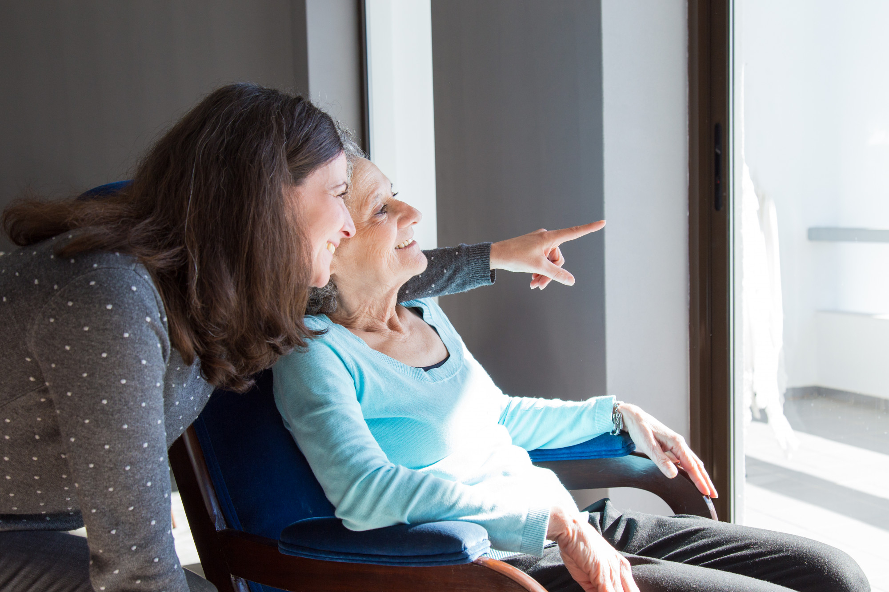
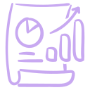
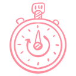

Te has sentido perdido?
Si has experimentado ansiedad, estres o depresion y no sabes como puedes llevarlo. Nosotros podemos ayudarte

Si no te sientes apoyado
Si te has sentido solo, abrumado y que necesitas ayuda con tados esas situaciones de estres. Nosotros podemos ayudarte

Has sentido que algun familiar necesita apoyo
Nostros podemos ser esa primera linea de comunicacion para apoyar a las personas que tanto amas
Nuestros servicios

Apoyo a adulto mayor

Nuestro servicio de Acompañamiento Psicológico para Adultos Mayores está específicamente diseñado para
ofrecerle el apoyo, las herramientas y el espacio seguro que merece para vivir esta etapa con plenitud, tranquilidad y alegría.

Terapia virtual
Nuestra Terapia Virtual le conecta con su psicólogo especialista a través de una videollamada segura y privada,
desde su computador, tableta o incluso teléfono. Es tan efectiva como la terapia presencial, pero con la ventaja de que puede realizarla en su espacio seguro, familiar y tranquilo.

Terapia a infantes
Nuestra Terapia Virtual le conecta con su psicólogo especialista a través de una videollamada segura y privada,
desde su computador, tableta o incluso teléfono. Es tan efectiva como la terapia presencial, pero con la ventaja de que puede realizarla en su espacio seguro, familiar y tranquilo.
Nuestras estadisticas

Mejora continua
Desde que comenzamos nuestros servicios de apoyo se ha
visto reflejado una mejoria de hasta el 80% en todos nuestro pacientes
Recomendaciones
Muchos de nuestros pacientes fueron recomendaciones realizadas
por nuestro pacientes a familiares, amigos y gente de su circulo social que en
algun momento necesito apoyo.

Tiempo de mejora
Mas del 75% porciento de nuestros pacientes necesitaron menos de
4 sesiones para ver los resultado y mejoras en sus hobbies o en su manera de sentirse
siendo así una manera eficaz de apoyar al que necesita de esta ayuda.